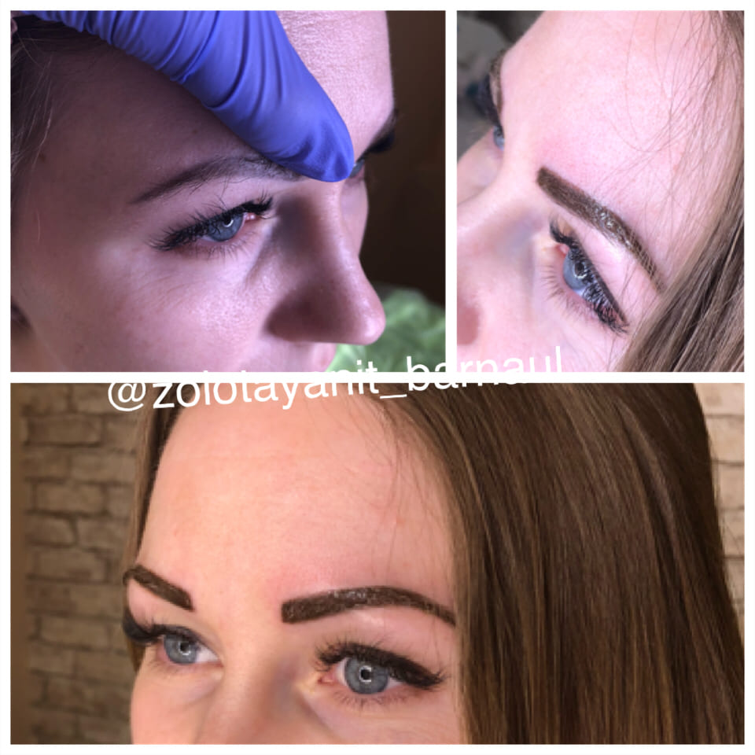
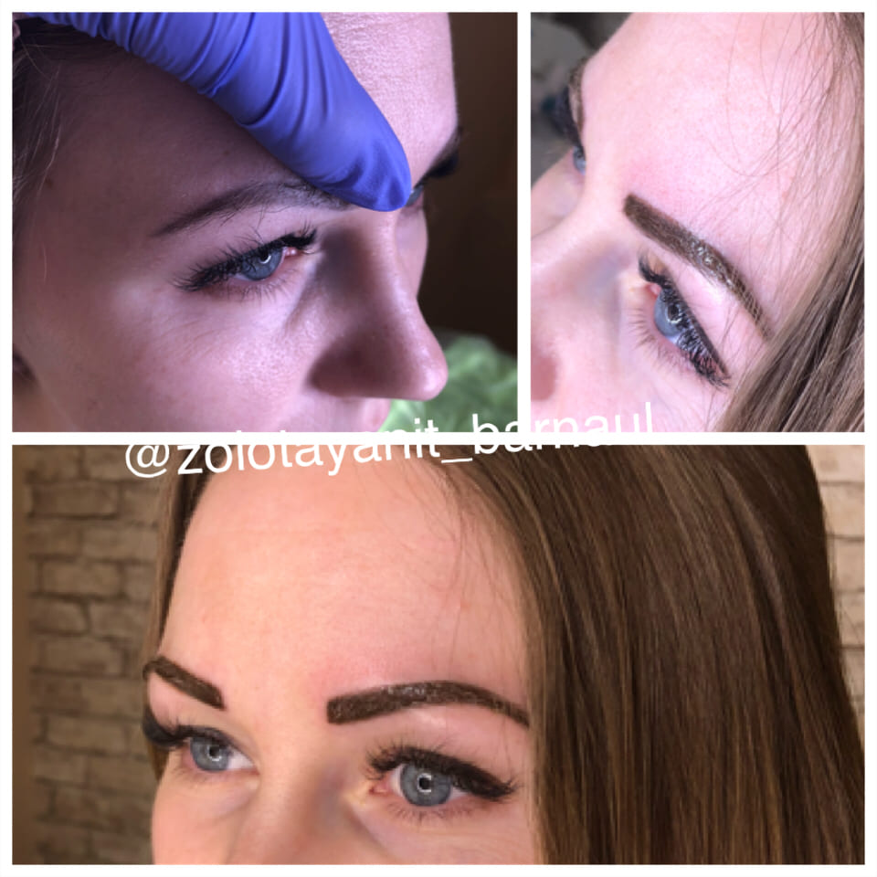
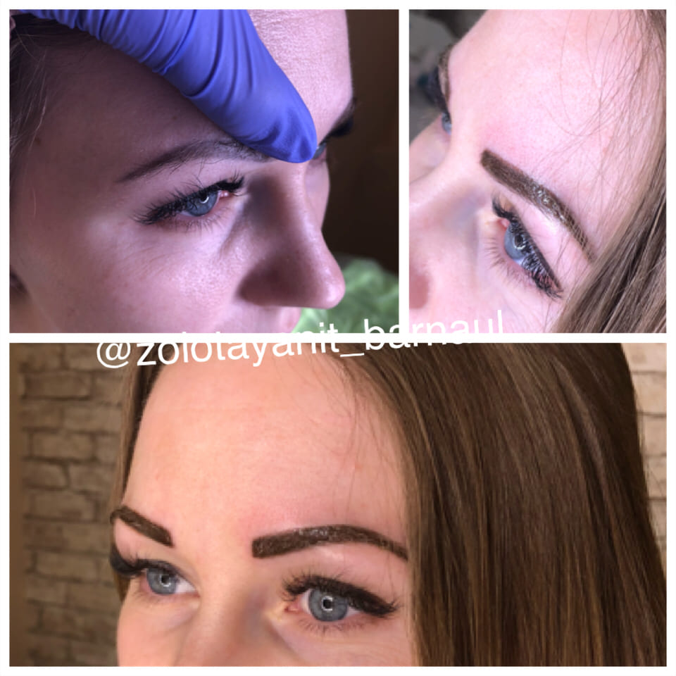

ул. Максима Горького, 22А
8(913)227-17-47

Брови как «аксессуар» лица способны либо подчеркнуть ваше обаяние, либо полностью разрушить образ своей неестественностью. Только перманентный макияж поможет вам добиться натуральной формы бровей. Эскиз формы бровей вы сможете выбрать вместе со специалистом, учитывая индивидуальные особенности лица: дугообразные, изогнутые или восходящие брови. Также при необходимости мы сможем скрыть шрамы или дефекты кожи.
Итак, если у вас нет времени по утрам на подкрашивание бровей, если вы хотите оставаться привлекательными на пляже и после бассейна, если вы неисправимый карьерист, у которого нет времени на себя, или если у вас слишком светлые брови, то на помощь вам придет татуаж бровей!
Нет ни одного мастера, который работает абсолютно без коррекции!! Необходимость в ней это не характеристика специалиста, как хорошего или плохого. Коррекция после процедуры нужна практически всегда и это факт, который необходимо учитывать. При чем нужна она после каждой процедуры, будь то первичный ПМ или рефреш (обновление перманентного макияжа спустя время, год и более).
Другой вопрос в том, что при пристальном личном осмотре после заживления, если Вас ВСЕ радует, то только в этом случае, можно на коррекцию не обращаться, но бывает это не в 100% случаях. Итак, если после заживления Вам все нравится, нет явной разницы по цвету, по симметрии, нет непрокрашенных участков, проталинок, насыщенность цвета устраивает и общий результат нравится, мастер только порадуется за Вас и за себя, значит до скорых встреч, через годик- два увидитесь на рефреше и будете весь этот период с благодарностью вспоминать те руки, которым Вы доверили свою несравненную внешность.
Перманентный макияж держится от 1 до 3-х лет. Как долго будет сохраняться ПМ в коже зависит от многих факторов:

Cтудия перманентного макияжа Ольги Фаренбурх 114